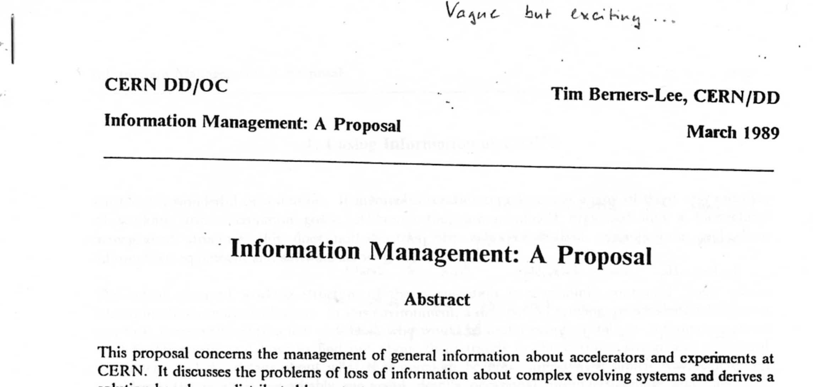
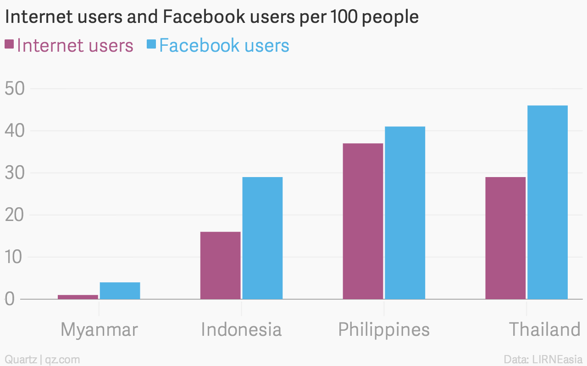
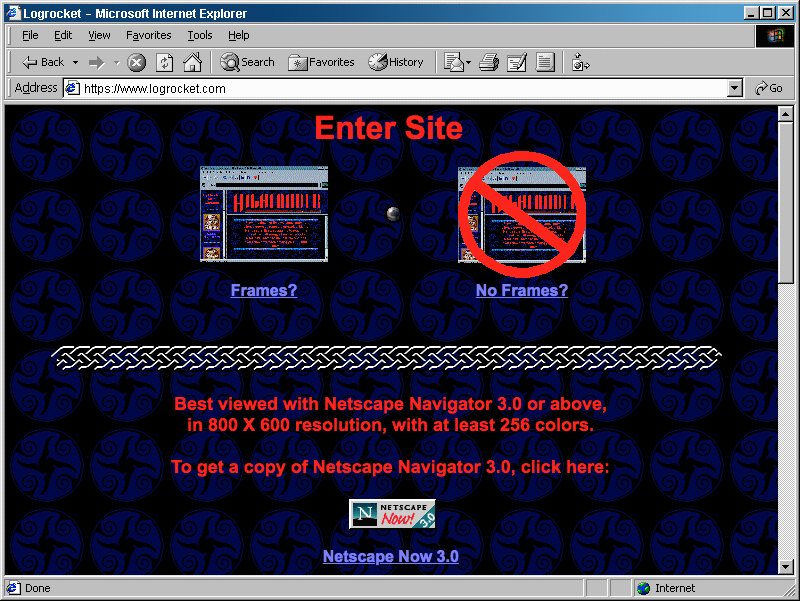
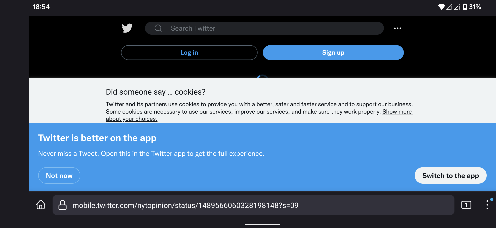
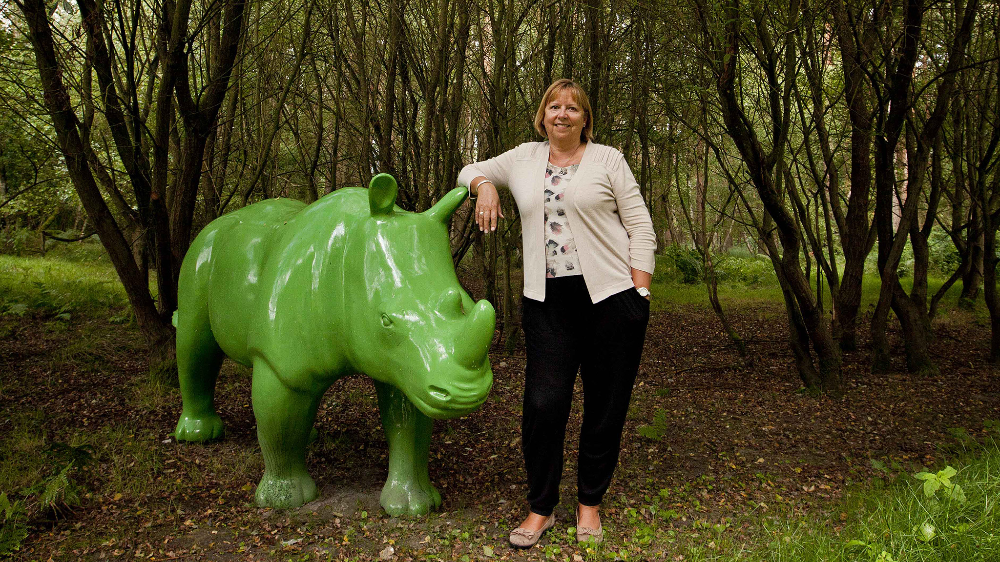

A Bird’s-Eye View of the Web Web Architecture & Technologies Web APIs The Semantic Web & Linked Data Linked Data Publishing Re-decentralizing the Web
VIDEO
Ted Nelson: computer pioneer
book “Computer Lib”
collection of texts, notes, drawings published in 1974
teaches computer tinkering and programming
flip side: “Dream Machines”
visions on future computer applications
first written mention of hypertext
By hypertext I mean non-sequential writing—text that
branches and allows choices to the reader,
best read at an interactive screen.
As popularly conceived,
Ted Nelson, Literary Machines (1980)
Nelson’s ideas were bigger than the Web,
Project Xanadu
OpenXanadu
published in 2014 as “a working deliverable”
…on top of the Web
Douglas Engelbart: visionary inventor,
inventor of the computer mouse
early developer of hypertext
strong proponent of computer networking
brought the revolutionary Mother of All Demos
in 1968:
graphical interface
networking
hypertext
…
VIDEO
Wendy Hall :
hypermedia pioneer,
inventor of the Microcosm
dynamic hypertext on a local computer
executive director of Web Science Trust
train future generations of Web Scientists
hugely influential in multimedia and hypermedia
former President of the ACM
former Vice President of the Royal Academy of Engineering
VIDEO
VIDEO

Tim Berners-Lee invented
Berners-Lee was working at CERN.
He drafted Information Management: A Proposal
goal
facilitating information sharing
needs
heterogeneity
decentralization
live links…
The first Web page came online in 1990.
accessible from anywhere in the world
any other page in the world can link to it
The world before the Web
Exchanging information was hard.
different hardware
different software
Innovation was hard.
For which machines do we build?
For which operating systems do we build?
The Web strives to be universal
Anyone can use the Web, regardless of:
hardware
desktop
phone
tablet
watch
…
software
operating system
browser
app
…
Developers are free to innovate.
Build for the Web.
Standards provide interoperability.
Unfortunately, this is not the default elsewhere.
App stores are a prominent counterexample.
CERN decided to make the Web
Web technologies are standardized(W3C) .
Communication evolved together
The Web is democratic.
everyone can read information
everyone can write information
Blogs emerged as a medium to spread thoughts.
The “Web 2.0” ideas made many usersprosumers .
Education evolved together
The free encyclopedia
Wikipedia started in 2001.
freely accessible knowledge for all
not always reliable though
Massive Open Online Courses soon followed.
Business evolved together
Pizza Hut accepted online orders already in 1994.
Amazon and many others exploit the long tail .
The Web brings freedom of expression
Anyone can say anything about anything.
We all have our own spaces,
We can link to opinions of others
A generation of social platforms
The Web brings permissionless innovation
Anyone can build anything for any reason.
The technologies are open.
You don’t need anyone’s permission
This contrast with app stores.
Permissionless innovation has brought
The Internet is a communication network
between different machines in the world.
The Web is a layer of interlinked resources
accessible through the Internet.
Which is the Internet
the Internet
a global communication network interconnecting devices
technologies:
the Web
an information space on top of the Internet
technologies:
The Internet is to Web whattelephone network is to fax .
The Internet contains more
on the Internet but not on the Web
e-mail
Skype
BitTorrent
VPN
…
on the Web but not on the Internet
Most people don’t understand or care about the difference…
but you should!

©2015 Quartz / LIRNEasia
Web linking is decentralized, implemented
essentials inside of HTML documents (not shared)
the rest outside of HTML documents (shareable)
styling (fonts, colors, …)
media (images, video, …)
scripts
The Web was the only hypertext system
Individual links are allowed to break
Tim Berners-Lee
VIDEO
The Web’s universality
HTTP and HTML were OS-independent.
Yet the server and browser were NeXT-specific.
Support for other systems followed in 1992.
Notably Mosaic
gave the Web a broader audience.
It provides compatibility at an unprecedented scale.
The text-based browser Lynx is still developed and used.
Your phone can access websites created 20 years ago.
The Web evolved together
1991 text (and links) only
1993 proposal for the <img> element2002 video through the Flash player
2009 HTML5 <video> element
The Web’s architecture makes it hard
Since the Web is decentralized,
Crawlers from search engines traverse the Webindex of content.
Feeds let you discover new content
An RSS feed contains the title and summary
specification co-authored by Aaron Swartz
By regularly polling such a feed,
no need to search/monitor the entire Web
Machines have only limited possibilities
on the “human” Web.
Browsers are operated by people.
How can we let machines access information?
How can we let machines perform actions?
Web APIs expose functionality
A Web API is a programmable interface
We can build client-side applications
reuse of the Web’s port and protocol stack
starting point for building native versions of an app
The number of Web APIs has
number of Web APIsProgrammableWeb
Web APIs let machines execute scripts,content .
Machines do not “know” what Web content means.
Indexing webpages doesn’t imply understanding them.
How can clients make sense of a webpage?
Can we somehow explain what is on there?
Can we help them make our lives easier?
Tim Berners-Lee and others proposedvision of intelligent Web agents.
By adding annotations to existing pages,
A network of knowledge is created
Don’t know something? Follow its link to look it up!
Our personal devices will combine
Linked (Open) Data aims to bootstrap
The early Semantic Web suffered
Nobody built applications, because there was no data.
Nobody published data, because there were no apps.
Tim Berners-Lee proposed Linked Data
Let’s get data out—apps will follow.
Billions of Linked Data facts
Google, Facebook, and others
However, the Semantic Web’s killer app
Who needs the Semantic Web when
Apple’s Siri and Google Nowon the Apple and Google servers.
The Semantic Web is like the Web:
Understanding the Web should
When websites are coded to browsers

Unfortunately, best viewed with

Native apps essentially undo
Before the Web, we needed specific software
Thanks to the Web, we only need a generic browser
Once more, we need specific apps.
Innovation becomes expensive and exclusive.
Your browser works for you —an app not necessarily.

©2014 David Sandison
Big data, the Web of Things, the Internet:
Wendy Hall
Centralization from multiple angles
Technological decentralization can differ from practice:
browser vendors
Only certain devices and software can access the Web.
search engines
A few companies make or break websites.
platforms (especially social networks)
You need a specific account to use the Web.
The current massive centralization
If you can integrate one service…
will it be facebook.com
or private-identity-provider.org ?
Developers depend on centralized platforms
…or they have to become such a platform themselves.
People lose control of their data
Innovation cannot attract locked-in customers.
Ironically, permissionless innovation
The Facebook founder has no intention of
Having profited mightily from the Web’s openness,
John Naughton, The Guardian
© Vinayak Shankar Rao
VIDEO
Aaron is dead.
Wanderers in this crazy world,
Hackers for right, we are one down,
Nurturers, carers, listeners, feeders,
Let us all weep.
Tim Berners-Lee
This is not only a tribute to Aaron’s achievements,
it also shows that anyone, regardless of who they are or where they come from,
can make an impact on the Web and thus the world.
VIDEO
Ted Nelson not only says goodbye to his best friend,
but also to an era and a vision.
Note his snarky comments about the Web,
not all of which are accurate.
The best way to predict
Alan Kay
The best way to invent
John Perry Barlow
Let’s assemble the brightest minds
Tim Berners-Lee


 Except where otherwise noted, the content of these slides is licensed under a Creative Commons Attribution 4.0 International License.
Except where otherwise noted, the content of these slides is licensed under a Creative Commons Attribution 4.0 International License.
![[Tim Berners-Lee and Vint Cerf at the W3C20 Anniversary Symposium]](images/tim-vint-back.jpg)
![[Tim Berners-Lee and Vint Cerf at the W3C20 Anniversary Symposium]](images/tim-vint-front.jpg)
![[Ted Nelson, Aaron Swartz, and Doug Engelbart at the 2001 International Semantic Web Working Symposium]](images/ted-aaron-doug.jpg)

![[an iPhone running Siri]](images/siri.png)
{kind=link}
{kind=link}